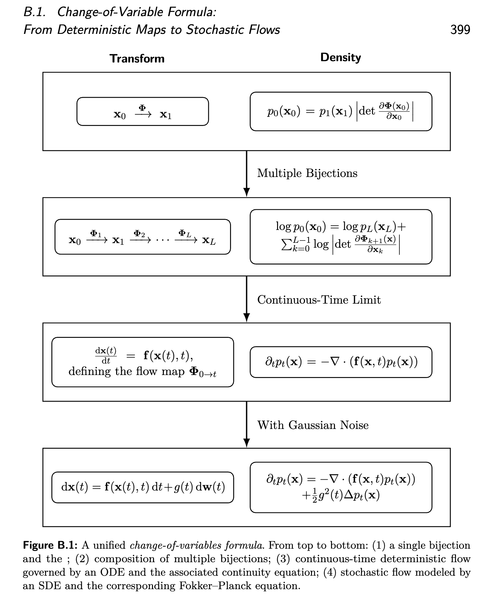

Mathematics Foundation¶
All discussions are in the Euclidean setting unless stated otherwise: \(x\in\mathbb{R}^D\), \(t\in[0,1]\). The goal is to pin down the minimum deterministic/stochastic differential-equation facts needed for flow models and diffusion models.
Chapter 1 — Differential Equations (DE): first-order ODE / SDE¶
1.1 Foundation of Ordinary Differential Equations¶
Let \(u:[0,1]\times\mathbb{R}^D\to\mathbb{R}^D\) be a time-dependent vector field. Consider the initial value problem (IVP)
A standard sufficient condition for (global) existence and uniqueness on \([0,1]\) is:
- for each \(t\), \(u(t,\cdot)\) is globally Lipschitz on \(\mathbb{R}^D\), and
- \(u\) has at most linear growth in \(x\) (e.g., \(\|u(t,x)\|\le a(t)+b\|x\|\) with \(a\in L^1([0,1])\)).
We write the solution as \(x(t;x_0)\) and define the flow map
One immediate consequence of uniqueness (hence of the Lipschitz-type assumptions above) is non-intersection of solution trajectories: if two solutions \(x_1(\cdot),x_2(\cdot)\) satisfy \(x_1(t_\ast)=x_2(t_\ast)\) at some time \(t_\ast\), then they must coincide for all \(t\) in their common interval of existence. (Proof sketch: treat \((t_\ast,x_1(t_\ast))\) as a new initial condition and apply uniqueness.)
1.1.1 Exponential integration factors (integration factor method)¶
This subsection is mainly about how to solve first-order ODEs in the cases where closed forms exist, and how to rewrite them into a form that is more structured (and numerically stable) when they do not.
Baseline. For a general nonlinear ODE \(\dot x=u(t,x)\), a closed form is usually unavailable; the “solution operator” is the flow map \(\psi_t\). In special cases, \(\psi_t\) can be written explicitly.
(A) Linear scalar ODE (homogeneous). Consider
where \(L:[0,1]\to\mathbb{R}\) is continuous. Then for any \(0\le s\le t\le 1\),
This motivates the exponential (integration) factor
which accumulates the time-dependent linear effect.
(B) Linear scalar ODE (inhomogeneous): integrating factor. For
define \(E(s\to t)\) as above. Then the closed-form solution is
This is the standard integrating-factor method.
(C) Semilinear ODE: variation of constants / Duhamel formula. More generally, consider a semilinear ODE
where \(x(t)\in\mathbb{R}^D\), \(L(t)\in\mathbb{R}\) (equivalently \(L(t)I\) acting on \(\mathbb{R}^D\)), and \(N:\mathbb{R}^D\times[0,1]\to\mathbb{R}^D\). Multiplying by \(E(s\to t)^{-1}\) and applying the product rule yields
Integrating from \(s\) to \(t\) gives the integral form (Duhamel / variation-of-constants formula)
This separates the evolution into a closed-form linear propagation and a nonlinear residual. Exponential integrators discretize only the integral term while handling the linear propagation exactly, often improving stability when the linear part is stiff.
Remark (matrix-valued linear part). If the linear part is \(L(t)\in\mathbb{R}^{D\times D}\), the same integral formula holds with \(E(s\to t)\) defined as the fundamental matrix solving \(\frac{d}{dt}E(s\to t)=L(t)E(s\to t)\), \(E(s\to s)=I\). In general \(E(s\to t)\neq \exp\!\big(\int_s^t L(\tau)\,d\tau\big)\) unless \(L(t)\) commutes with itself at different times (or \(L\) is constant).
What is “closed form” here (and when do we still need numerics)? For a generic nonlinear first-order ODE, a closed-form solution is not available. Case (A) is fully explicit. Case (B) is explicit up to quadrature: if the integral \(\int_s^t E(\tau\to t)r(\tau)\,d\tau\) can be evaluated analytically then we obtain a closed form; otherwise we still compute that integral numerically. Case (C) provides an exact integral representation, but since \(N\) depends on the unknown trajectory \(x(\tau)\), it is generally an implicit integral equation and still requires numerical approximation (e.g., time stepping, Picard iteration, or exponential integrators).
Diffeomorphism is about regularity/invertibility, not linearity. In flow models, we often care that the time-\(t\) map \(\psi_t\) is a (local) \(C^1\) diffeomorphism so that the transformation is invertible and change-of-variables identities make sense. This property does not require the dynamics to be linear. Rather, it follows from ODE well-posedness plus smoothness: if \(u(t,\cdot)\) is (locally) Lipschitz (uniqueness) and \(C^1\) in \(x\) on a domain where solutions exist up to time \(t\), then \(\psi_t\) is (locally) invertible and differentiable, with inverse given by running the same ODE backward in time. Nonlinearity is typical and compatible with diffeomorphism; linearity is only a special case where we may also get closed-form expressions.
1.1.2 Numerical solvers for ODEs (time discretization)¶
Closed-form solutions are rare for nonlinear, time-dependent ODEs, so we typically approximate trajectories numerically. A useful starting point is the integral form of the ODE
namely
Numerical solvers discretize time and approximate this integral by evaluating the vector field \(v\) at selected points.
Discretization. Choose grid points \(0=t_0<t_1<\dots<t_N=T\) with step sizes \(h_n:=t_{n+1}-t_n\), and maintain states \(x_n\approx x(t_n)\).
Order of accuracy (one line). A method is called order-\(p\) if, for a sufficiently smooth solution and a uniform step size \(h\), its global error at \(T\) scales as \(O(h^p)\) as \(h\to 0\) (equivalently, local truncation error \(O(h^{p+1})\)).
Euler (explicit). The simplest one-step method uses the current slope:
It is first-order accurate: local truncation error \(O(h_n^2)\) and global error \(O(\max_n h_n)\) under standard regularity assumptions.
Heun (improved Euler / explicit trapezoid). A second-order predictor–corrector:
It has local error \(O(h_n^3)\) and global error \(O((\max_n h_n)^2)\).
Runge–Kutta (RK4). A standard fourth-order method based on four slopes:
RK4 is a common accuracy–cost tradeoff when vector-field evaluations are not too expensive.
Semilinear structure and exponential integrators. If \(v(x,t)=L(t)x+N(x,t)\) (Section 1.1.1), then
and exponential integrators approximate only the integral term while handling the linear propagation \(E(\cdot\to\cdot)\) analytically. This can substantially improve stability when the linear part is stiff.
Reverse-time integration (ODE). Solving backward from a terminal condition \(x(T)=x_T\) is straightforward: integrate on a decreasing grid \(t_0=T>t_1>\dots>t_N=0\). With Euler and constant step \(h>0\),
For ODEs, this is just a reparameterization of time; in diffusion models, reverse-time ODE integration is used for sampling (e.g., probability flow ODEs).
Remark (stability and stiffness). For stiff dynamics, explicit methods may require very small step sizes for stability; implicit methods or structure-exploiting solvers (e.g., exponential integrators, diffusion-specific solvers) can be preferable.
Minimal code (Euler / Heun / RK4). Below is a tiny reference implementation for the scalar ODE \( \dot x=v(x,t) \). The same structure applies to \(x\in\mathbb{R}^D\) by letting x be a NumPy/PyTorch array/tensor and having v(x,t) return the same shape.
from typing import Callable, Literal, Tuple, List
Method = Literal["euler", "heun", "rk4"]
def solve_ode(
v: Callable[[float, float], float],
x0: float,
t0: float,
t1: float,
n_steps: int,
method: Method = "euler",
) -> Tuple[List[float], List[float]]:
"""
Solve dx/dt = v(x,t) on [t0,t1] with a chosen explicit solver.
- method: "euler" | "heun" | "rk4"
"""
if n_steps <= 0:
raise ValueError("n_steps must be positive")
h = (t1 - t0) / n_steps
t = t0
x = x0
ts = [t]
xs = [x]
for _ in range(n_steps):
if method == "euler":
x = x + h * v(x, t)
elif method == "heun":
k1 = v(x, t)
x_pred = x + h * k1
k2 = v(x_pred, t + h)
x = x + (h / 2.0) * (k1 + k2)
elif method == "rk4":
k1 = v(x, t)
k2 = v(x + 0.5 * h * k1, t + 0.5 * h)
k3 = v(x + 0.5 * h * k2, t + 0.5 * h)
k4 = v(x + h * k3, t + h)
x = x + (h / 6.0) * (k1 + 2.0 * k2 + 2.0 * k3 + k4)
else:
raise ValueError(f"unknown method: {method}")
t = t + h
ts.append(t)
xs.append(x)
return ts, xs
1.2 Random initial condition (random IVP)¶
Fix a probability space \((\Omega,\mathcal{F},\mathbb{P})\). Let \(\mathbf{X}_0:\Omega\to\mathbb{R}^D\) be an \(\mathcal{F}\)-measurable random variable with law \(\mu_0:=\mathcal{L}(\mathbf{X}_0)\). Define
and denote \(\mu_t:=\mathcal{L}(\mathbf{X}_t)\). This is still a deterministic ODE; randomness enters only through \(\mathbf{X}_0\).
1.3 Push-forward of measures and test-function identity¶
For each \(t\), the law evolves by push-forward:
Equivalently, for any bounded measurable \(\varphi:\mathbb{R}^D\to\mathbb{R}\),
1.4 Foundation of Stochastic Differential Equations¶
This section provides an intuition-first bridge from ODEs to SDEs. Chapter 2 then states the Itô SDE and the associated density evolution (Fokker–Planck).
1.4.1 From ODEs to SDEs (discretization intuition)¶
Start from a deterministic ODE in \(\mathbb{R}^D\):
Euler time stepping with step size \(\Delta t\) gives
To model uncertainty or unmodeled interactions, add a random perturbation at each time step:
The \(\sqrt{\Delta t}\) scaling is crucial: it is the scaling (up to constants) for which the cumulative randomness remains \(O(1)\) over \(O(1)\) time, rather than vanishing (\(\Delta t\)) or exploding (\(1\)).
In the continuous-time limit, this leads to an Itô SDE
where \(W_t\in\mathbb{R}^D\) is a standard Brownian motion (Wiener process) characterized by:
- \(W_0=0\) a.s.;
- independent increments: \(W_t-W_s\) is independent of \(\sigma(W_u:u\le s)\) for \(0\le s<t\);
- Gaussian increments: \(W_t-W_s\sim \mathcal{N}(0,(t-s)I_D)\);
- sample paths are a.s. continuous but nowhere classically differentiable.
The notation \(dW_t:=W_{t+dt}-W_t\) is a convenient shorthand for these increments and should not be interpreted as a classical differential. Informally, one writes
meaning that over a short interval of length \(dt\), the increment behaves like a zero-mean Gaussian with covariance \(dt\,I_D\).
1.4.2 How to read an Itô SDE: integral form and Itô integration intuition¶
An SDE should be understood through its integral formulation. For example, the Itô SDE
means that for each \(t\in[0,T]\),
where the first integral is a classical (Lebesgue/Riemann) integral and the second is an Itô stochastic integral.
We do not build the Itô integral rigorously here; instead, keep the following intuition in mind. For a partition \(0=t_0<t_1<\dots<t_N=t\), the Itô integral can be viewed (informally) as a limit of left-point Riemann sums:
with convergence in probability (under suitable conditions). The left-endpoint evaluation \(g(t_i)\) is what distinguishes the Itô convention from other conventions (e.g., Stratonovich often corresponds to midpoint-type evaluations).
Because Brownian sample paths are a.s. continuous but nowhere classically differentiable, expressions like \(dW_t/dt\) do not exist in the usual sense, and classical “integrate both sides” reasoning does not apply directly. The differential notation \(dX_t\), \(dt\), \(dW_t\) is therefore shorthand for increments and must be interpreted through the integral equation above.
Comparison with ODEs. For an ODE \(\dot x(t)=f(x(t),t)\), the integral form
is justified by the fundamental theorem of calculus (differentiability recovers the function from its derivative). For SDEs, there is no direct analog because \(W_t\) is not differentiable and stochastic integrals do not obey the classical chain rule. Instead, the correct replacement is Itô’s formula (Itô’s lemma), which we will use later when connecting SDEs to density evolution and reverse-time constructions in diffusion models.
Minimal code (Euler–Maruyama / Milstein). The most common time stepping for Itô SDEs is Euler–Maruyama. Below is a small reference implementation for
where \(W_t\in\mathbb{R}^m\) and \(G(x,t)\in\mathbb{R}^{D\times m}\). Milstein is included only for the scalar case \(D=m=1\).
from typing import Callable, Literal, Tuple, Optional
import numpy as np
SdeMethod = Literal["euler_maruyama", "milstein_scalar"]
def solve_sde(
f: Callable[[np.ndarray, float], np.ndarray],
G: Callable[[np.ndarray, float], np.ndarray],
x0,
t0: float,
t1: float,
n_steps: int,
*,
method: SdeMethod = "euler_maruyama",
rng: Optional[np.random.Generator] = None,
dgdx_scalar: Optional[Callable[[float, float], float]] = None,
) -> Tuple[np.ndarray, np.ndarray]:
"""
Solve the Itô SDE: dX = f(X,t) dt + G(X,t) dW, with W in R^m.
- f(x,t): (D,) -> (D,)
- G(x,t): (D,) -> (D,m)
- x0: float or array-like of shape (D,)
- method:
- "euler_maruyama": works for any (D,m)
- "milstein_scalar": only for D=m=1; requires dgdx_scalar(x,t)=d/dx g(x,t)
where G(x,t) = [[g(x,t)]].
"""
if n_steps <= 0:
raise ValueError("n_steps must be positive")
if t1 <= t0:
raise ValueError("require t1 > t0 for this forward-time solver")
rng = np.random.default_rng() if rng is None else rng
x = np.asarray(x0, dtype=float)
if x.ndim == 0:
x = x.reshape((1,))
t = float(t0)
h = (t1 - t0) / n_steps
ts = np.empty(n_steps + 1, dtype=float)
xs = np.empty((n_steps + 1,) + x.shape, dtype=float)
ts[0] = t
xs[0] = x
for n in range(n_steps):
drift = np.asarray(f(x, t), dtype=float).reshape(x.shape)
diffusion = np.asarray(G(x, t), dtype=float)
if diffusion.ndim != 2:
raise ValueError("G(x,t) must return a 2D array of shape (D,m)")
D, m = diffusion.shape
if D != x.shape[0]:
raise ValueError("G(x,t) first dimension must match x dimension D")
dW = rng.standard_normal(size=(m,)) * np.sqrt(h) # N(0, h I_m)
if method == "euler_maruyama":
x = x + h * drift + diffusion @ dW
elif method == "milstein_scalar":
if not (D == 1 and m == 1 and x.shape == (1,)):
raise ValueError("milstein_scalar requires D=m=1 and scalar state")
if dgdx_scalar is None:
raise ValueError("milstein_scalar requires dgdx_scalar")
g = float(diffusion[0, 0])
gp = float(dgdx_scalar(float(x[0]), t))
x = x + h * drift + diffusion @ dW + 0.5 * g * gp * (dW[0] ** 2 - h)
else:
raise ValueError(f"unknown method: {method}")
t = t + h
ts[n + 1] = t
xs[n + 1] = x
return ts, xs
Chapter 2 — Density Evolution: From change of variables to Fokker–Planck¶
This chapter summarizes the two canonical density-evolution PDEs:
- deterministic transport (ODE) \(\Rightarrow\) continuity equation;
- stochastic diffusion (Itô SDE) \(\Rightarrow\) Fokker–Planck equation.
2.1 Change-of-Variable Formula: From Deterministic Maps to Stochastic Flows¶

This section starts from a single deterministic update \(x_1=\Psi(x_0)\) and tracks how densities transform under smooth bijections. Composing many such updates leads to the Jacobian-determinant bookkeeping used in normalizing flows. Taking a continuous-time limit recovers the continuity equation; adding Brownian noise upgrades it to the Fokker–Planck equation (Section 2.2).
2.1.1 Single deterministic map¶
Let \(\Psi:\mathbb{R}^D\to\mathbb{R}^D\) be a \(C^1\) bijection with \(C^1\) inverse (a diffeomorphism). If \(X_0\sim p_0\) and \(X_1:=\Psi(X_0)\), then \(X_1\sim p_1\) where the density is given by the change-of-variable formula
Equivalently, writing \(x_1=\Psi(x_0)\),
Interpretation: \(\left|\det\nabla\Psi\right|\) is the local volume change, and the density compensates to conserve probability mass.
At the measure level, this is exactly a push-forward:
meaning \(\mu_1(A)=\mu_0(\Psi^{-1}(A))\) for any Borel set \(A\subseteq\mathbb{R}^D\). The density formula above is the Lebesgue-density version of \(\mu_1=\Psi_\#\mu_0\).
As a special case, if \(\Psi(x)=Ax\) with \(A\in\mathbb{R}^{D\times D}\) invertible, then
2.1.2 Composing multiple bijections (discrete normalizing flows)¶
Consider a sequence of diffeomorphisms \(\Psi_1,\dots,\Psi_L\) and states \(x_k=\Psi_k(x_{k-1})\). If \(X_0\sim p_0\), define \(X_k:=\Psi_k(X_{k-1})\) and let \(p_k\) be the density of \(X_k\). Mass conservation at each step implies
Recursing yields the overall Jacobian product
and, in log form,
This is the core likelihood bookkeeping identity for (discrete) normalizing flows.
2.1.3 Continuous-time limit \(\Rightarrow\) continuity equation¶
Let \(u(t,x)\) be a time-dependent velocity field and consider the ODE \(\dot x(t)=u(t,x(t))\). A standard way to connect maps to flows is to take small steps
so the Jacobian factor becomes \(\det(I+\Delta t\,\nabla_x u(t,x))\). In the limit \(\Delta t\to 0\), the density \(p_t\) (when it exists and is smooth enough) evolves according to the continuity equation
Along trajectories \(X_t\) solving the ODE, an equivalent form is
Regularity of \(u\) \(\Rightarrow\) an invertible flow map. Under standard ODE well-posedness assumptions (e.g., \(u(t,\cdot)\) locally Lipschitz in \(x\) and sufficiently regular in \(t\)), for each initial condition \(x_0\) there is a unique trajectory \(t\mapsto x(t;x_0)\). This defines the time-\(t\) flow map
Uniqueness implies non-intersection of trajectories, and in particular makes \(\psi_t\) (locally) invertible on its domain of existence: the inverse is given by running the same ODE backward in time, i.e., \(\psi_t^{-1}=\psi_{t\to 0}\) whenever both flows are well-defined. If \(u\) is \(C^1\) in \(x\), then \(\psi_t\) is (locally) a \(C^1\) diffeomorphism.
Derivation sketch (via change of variables). View the ODE as the continuous-time limit of small bijective updates (forward Euler):
Then
and hence
using \(\det(I+\Delta t A)=1+\Delta t\,\mathrm{tr}(A)+O(\Delta t^2)\) and \(\nabla\!\cdot u=\mathrm{tr}(\nabla_x u)\). Applying the change-of-variable formula to the update gives
On the other hand, a Taylor expansion yields
Matching \(O(\Delta t)\) terms and rewriting via the product rule recovers (CE) (and the trajectory form above).
At the measure level, the ODE flow map \(\psi_t\) (when well-defined) pushes the initial law forward:
When \(\mu_t(dx)=p_t(x)\,dx\) exists, the continuity equation (CE) is the density-level expression of \(\mu_t=(\psi_t)_\#\mu_0\).
2.1.4 ODE vs SDE: push-forward map vs stochastic evolution¶
For an Itô SDE, sample paths satisfy
and \(X_t\) is no longer a deterministic function of \(X_0\). Consequently, in general there is no single deterministic map \(\psi_t\) such that \(\mu_t=(\psi_t)_\#\mu_0\).
Instead, the law evolves via a transition kernel (Markov semigroup) \(P_t\). In a notation that mirrors the push-forward \(\#\), it is common to view \(P_t\) as inducing a push-forward operator on measures (the adjoint of \(P_t\) acting on test functions).
Kernel \(\Rightarrow\) measure push-forward. Let \(P_t(x,\cdot)\) be a probability measure on \(\mathbb{R}^D\) for each \(x\), and write \(P_t(x,A)\) for its mass on a Borel set \(A\). Define the induced operator \(P_t^\ast\) on measures by
Then the law evolution is simply
Many notes also write this as \(\mu_t=\mu_0 P_t\) (right action) or, informally, \(\mu_t=(P_t)_\#\mu_0\) to emphasize “push-forward by a stochastic mechanism”. The safest (unambiguous) notation is \(P_t^\ast \mu_0\).
Dual (test-function) form. The same evolution can be written as
for bounded measurable \(\varphi\). This is exactly the “kernel vs measure” adjoint relationship: \(P_t\) acts on functions, \(P_t^\ast\) acts on measures.
Deterministic maps as a special case. If \(P_t\) comes from a deterministic map \(\psi_t\), then
So the usual push-forward \((\psi_t)_\#\) is recovered by taking a Dirac transition kernel.
When a density \(p_t\) exists, this kernel-level evolution is described by the Fokker–Planck equation (Section 2.2), which differs from the continuity equation by a second-order diffusion term.
Velocity-first vs density-first (Eulerian vs Lagrangian). There is an important asymmetry:
- Velocity-first: specifying \(u(t,\cdot)\) (under well-posedness assumptions) determines the flow map \(\psi_t\), hence determines the pushed-forward laws \(\mu_t=(\psi_t)_\#\mu_0\) and (when densities exist) a unique density evolution via (CE).
- Density-first: specifying only a density path \(t\mapsto p_t\) generally does not determine a unique velocity field. Indeed, if a vector field \(w_t(x)\) satisfies
then both \(u_t\) and \(u_t+w_t\) produce the same right-hand side in (CE), hence the same density evolution. A single density path may correspond to many different particle flows.
Realizability (consistency check). Not every arbitrary path \(p_t\) can arise as the marginal law of particles moving under some deterministic velocity field. The continuity equation provides a consistency condition: we say \(p_t\) is realizable (generated by a flow) if there exists \(u(t,x)\) such that \(p_t\) and \(u\) satisfy (CE) (with suitable boundary/decay conditions).
(Optional) Conditioning. If we introduce an auxiliary variable \(Z\sim\pi\) and define a conditional velocity field \(u(t,x\mid z)\), then for each fixed \(z\) we have a conditional push-forward and continuity equation:
The unconditional marginal is the mixture
2.1.5 Path-first (density-first) vs velocity-first: where diffusion and flow matching fit¶
In modern generative modeling, it is useful to separate two design patterns:
- Path-first / density-first: first specify (explicitly or implicitly) a probability path \((\mu_t)_{t\in[0,1]}\) or a forward corruption mechanism that induces \(\mu_t\), and then learn dynamics that are consistent with that path.
- Velocity-first: first specify a parameterized dynamics family (e.g., a flow map or vector field \(u_\theta\)), and then fit it to data using an objective; the induced path \(\mu_t\) is whatever that dynamics produces.
Flow-based generative modeling can be understood as a Lagrangian particle system whose Eulerian density evolution satisfies the continuity equation (in a suitable weak sense, and as a pointwise PDE under additional regularity), expressing pure transport and conservation of probability mass. This is a useful intuition for why, in a velocity-first viewpoint, we do not “impose (CE) as a constraint”: once we specify the particle dynamics \(\dot X_t=u(t,X_t)\) and define \(\mu_t=(\psi_t)_\#\mu_0\), (CE) follows as the density-level statement of mass conservation. By contrast, in a path-first/density-first viewpoint, (CE) acts as a compatibility condition between a prescribed \(p_t\) and a velocity field \(u\).
Here “first” refers to what is treated as the design input in modeling/derivation/training (what you specify up front), not what is “known during sampling”. In both paradigms, once dynamics are learned, sampling proceeds by integrating an ODE/SDE.
“Design input” means something you choose to specify that defines the modeling problem; “known” means something that is already given at a particular stage of an algorithm/derivation (often as an output of a previous stage).
Diffusion models and flow matching are typically path-first:
- Diffusion models: choose a forward noising SDE (equivalently a noise schedule such as \(\beta(t)\) or \(\alpha(t),\sigma(t)\)), which defines a tractable forward path that “thickens” the data distribution. Training then learns a reverse-time object (often the score) that makes sampling possible.
- Flow matching / CFM: choose a probability path via a coupling + interpolation (e.g., endpoint pairing and \(\gamma_t(x_0,x_1)\)), then learn a velocity field that generates (or matches) that path.
In this path-first viewpoint, the continuity equation (CE) plays the role of a consistency condition: a velocity field \(u\) generates a density path \(p_t\) only if \(p_t\) and \(u\) satisfy (CE). In practice we rarely “solve (CE) for \(u\)” directly because \(p_t\) is not available in closed form; instead, training objectives are designed as computable surrogates that guarantee (or approximate) the same consistency.
Finally, note that sampling is always velocity-first in execution: once a model provides a drift/velocity (ODE or SDE), we generate samples by numerically integrating the learned dynamics.
2.2 Stochastic dynamics: Itô SDE¶
Let \(\mathbf{W}_t\) be a standard \(m\)-dimensional Brownian motion. Consider the Itô SDE
where \(b:[0,1]\times\mathbb{R}^D\to\mathbb{R}^D\) is the drift and \(\sigma:[0,1]\times\mathbb{R}^D\to\mathbb{R}^{D\times m}\) is the diffusion coefficient. Define the diffusion matrix
Assume \(\mu_t(dx)=p_t(x)\,dx\) exists and \(b,\sigma\) are regular enough. Then \(p_t\) satisfies the Fokker–Planck (forward Kolmogorov) equation
Special cases:
- Pure transport (\(\sigma\equiv 0\)): the second-order term vanishes and we recover the continuity equation.
- Isotropic diffusion (\(a(t,x)=\beta(t)I\)): the second-order term becomes \(\frac{1}{2}\beta(t)\Delta p_t\).
In the diffusion-model setting, a common special case is
i.e., \(\sigma(t,x)=g(t)I\). Then
Using \(\nabla p_t=p_t\nabla\log p_t\), this can be rewritten in a divergence (mass conservation) form:
Here the first term transports probability mass by the drift, while the Laplacian term models spreading (diffusion) due to stochastic noise. A full derivation uses Itô calculus and is omitted here.
2.3 Intuition of the Continuity Equation¶
The continuity equation is a conservation law for a density. In our context, it describes conservation of probability mass under deterministic transport.
2.3.1 Physical interpretation (control volume and flux)¶
Think of a small fixed box (control volume) centered at \(x\in\mathbb{R}^3\) with side lengths \(\Delta x,\Delta y,\Delta z\). Let \(p(x,t)\) be the density of a conserved quantity (mass or probability). The total amount inside the box is approximately
Changes can only happen via flux across the boundary. Let \(j(x,t)\in\mathbb{R}^3\) be the flux vector (amount crossing unit area per unit time). The net outflux in the \(x\)-direction is approximately
and similarly for the other directions. Summing the three directions, the total net outflux is
Conservation says “rate of change inside = minus net outflux”, hence
Canceling the volume factor (valid for any sufficiently small box) yields the local form
For deterministic particle transport with velocity field \(u(x,t)\), the natural flux is \(j=p\,u\). Plugging this into the conservation law gives the continuity equation
which is exactly (CE) in Section 2.1.3.
2.3.2 Derivation from a global conservation law (divergence theorem)¶
Let \(p(x,t)\) be a density on \(\mathbb{R}^D\), \(u(x,t)\) a velocity field, and \(V\subset\mathbb{R}^D\) an arbitrary control volume with boundary \(\partial V\) and outward unit normal \(n\). The total mass in \(V\) is
so its time derivative is the accumulation rate \(\frac{d}{dt}\int_V p\,dx\). The outward flux through the boundary is
Conservation requires
Using the divergence theorem,
so
Since \(V\) is arbitrary, the integrand must vanish (in the weak sense), yielding
Appendix A — Integrating factor derivation (scalar linear ODE)¶
This appendix spells out the algebra behind the integrating-factor identity used in Section 1.1.1.
A.1 Problem¶
Let \(L:[0,1]\to\mathbb{R}\) and \(r:[0,1]\to\mathbb{R}\) be continuous. Consider the inhomogeneous linear ODE
Fix \(0\le s\le t\le 1\) and assume \(x(\cdot)\) is differentiable.
A.2 Step 1: define the integration factor and its derivative¶
Define
By the chain rule and the fundamental theorem of calculus,
A.3 Step 2: product rule (the key identity)¶
Using the product rule,
Substituting \(\frac{d}{dt}E^{-1}(s\to t)=-L(t)E^{-1}(s\to t)\) gives
If \(\dot x(t)=L(t)x(t)+r(t)\), then \(\dot x(t)-L(t)x(t)=r(t)\), hence
A.4 Step 3: integrate from \(s\) to \(t\)¶
Integrate both sides from \(s\) to \(t\) (use \(\tau\) as the integration variable):
By the fundamental theorem of calculus, the left-hand side is
Since \(E^{-1}(s\to s)=\exp(0)=1\), we obtain
A.5 Step 4: solve for \(x(t)\) (the closed-form formula)¶
Multiply both sides by \(E(s\to t)\):
Finally, note that
so the solution can be written as
Appendix B — Derivation of the Fokker–Planck equation (isotropic diffusion)¶
This appendix derives the Fokker–Planck equation for the diffusion-model-style SDE
where \(X_t\in\mathbb{R}^D\), \(W_t\) is a standard \(D\)-dimensional Brownian motion, \(f:\mathbb{R}^D\times[0,T]\to\mathbb{R}^D\), and \(g:[0,T]\to[0,\infty)\). We assume enough regularity (existence of a smooth density \(p_t\) and sufficient decay at infinity) to justify exchanging derivatives/integrals and integrating by parts.
B.0 Notation and assumptions (what we use implicitly)¶
- Write \(X_t=(X_t^{(1)},\dots,X_t^{(D)})\) and \(W_t=(W_t^{(1)},\dots,W_t^{(D)})\).
- \(\nabla\varphi=(\partial_{x_1}\varphi,\dots,\partial_{x_D}\varphi)\), \(\Delta\varphi=\sum_{i=1}^D \partial_{x_i x_i}\varphi\), and \(\nabla\!\cdot F=\sum_{i=1}^D \partial_{x_i}F_i\).
- The quadratic covariation of Brownian motion satisfies
Consequently, since \(dX_t^{(i)}=\cdots + g(t)\,dW_t^{(i)}\),
B.1 From Itô’s formula to the generator identity (weak form)¶
Let \(\varphi\in C_c^\infty(\mathbb{R}^D)\) be a smooth test function with compact support. Define the (time-dependent) Itô generator
Step 1 (Itô’s formula, written component-wise). Since \(X_t\) solves \(dX_t=f(X_t,t)\,dt+g(t)\,dW_t\), Itô’s formula says
Substitute \(dX_t^{(i)}=f_i(X_t,t)\,dt+g(t)\,dW_t^{(i)}\) and \(d\langle X^{(i)},X^{(j)}\rangle_t=g(t)^2\delta_{ij}\,dt\):
Recognizing the dot products, this is exactly
Step 2 (integrate and take expectations). Integrate from \(0\) to \(t\):
Taking expectations and using that the Itô stochastic integral is a martingale with zero mean (under standard square-integrability conditions),
This is the weak evolution equation: it characterizes the time derivative of \(\mathbb{E}[\varphi(X_t)]\) for every test function \(\varphi\).
B.2 Convert the generator identity into a PDE for \(p_t\)¶
If \(X_t\) has density \(p_t\), then
Plugging into \((\text{B.1})\) gives
Step 1 (drift term: one integration by parts). Write the drift term coordinate-wise:
Integrate by parts in \(x_i\) (boundary terms vanish due to compact support/decay):
Summing over \(i\) yields
Step 2 (diffusion term: two integrations by parts). Since \(g(t)\) does not depend on \(x\), we can factor it out. Using that the Laplacian is formally self-adjoint under these boundary conditions,
One way to see this is coordinate-wise: for each \(i\),
then sum over \(i=1,\dots,D\). Therefore,
Since this holds for all \(\varphi\in C_c^\infty(\mathbb{R}^D)\), we conclude the Fokker–Planck equation (in the weak sense, and pointwise under additional regularity):
B.3 Divergence form and the score¶
The Fokker–Planck equation can be rewritten so that the right-hand side is a single divergence \(-\nabla\!\cdot(\text{flux})\), making the “mass conservation” structure explicit.
Step 1 (write diffusion as divergence of a flux). Since \(g(t)\) is independent of \(x\),
In the last equality we used \(\nabla p_t=p_t\nabla\log p_t\), valid wherever \(p_t>0\) (and in a weak sense under mild conditions).
Step 2 (combine drift flux and diffusion flux). Substituting into \((\text{FP})\) yields the pure-divergence form
which matches the common “drift minus diffusion-times-score” decomposition.
Remark (general diffusion matrix). For a general Itô SDE \(dX_t=b\,dt+\sigma\,dW_t\) with \(a=\sigma\sigma^\top\), the diffusion term becomes \(\frac12\sum_{ij}\partial_{x_i}\partial_{x_j}(a_{ij}p_t)\). The isotropic case above corresponds to \(a(t,x)=g(t)^2 I\).
References¶
- Chieh-Hsin Lai, Yang Song, Dongjun Kim, Yuki Mitsufuji, Stefano Ermon. The Principles of Diffusion Models. arXiv:2510.21890 (2025).
https://arxiv.org/abs/2510.21890(DOI:https://doi.org/10.48550/arXiv.2510.21890). Local copy:topics/diffusion/papers/the_principles_of_diffusion_models.pdf.